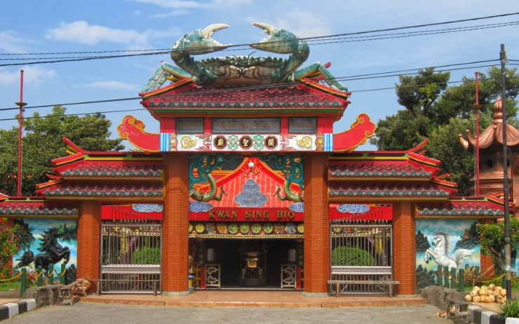
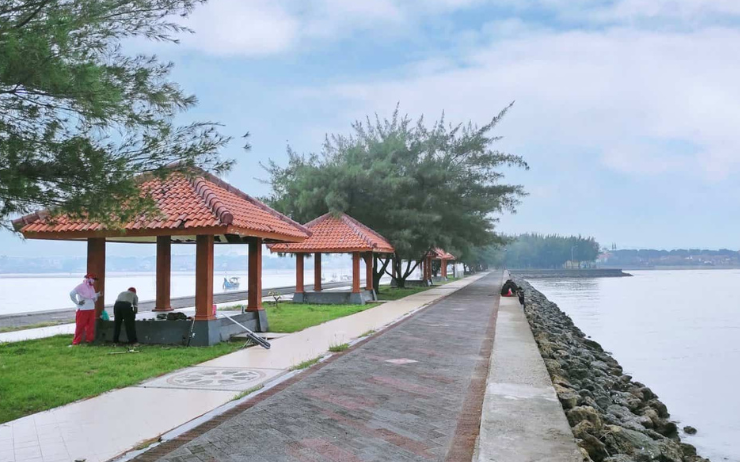

GALERI FOTO DESTINASI

Makam Sunan Bonang

Pantai Kelapa Panyuran

Klenteng Kwan Sing Bio

Goa Akbar

Pantai Sowan

Masjid Agung Tuban

Pantai Semilir

Museum Kambang Putih

Air Terjun Nglirip
Makam Ronggolawe

Rajungan Remason

Sentra Batik Gedog

Jatiwangi Park
Gua Putri Asih

Garang Asem

Alun-Alun Tuban

Dermaga Pantai Boom

Restoran Seafood Pesisir
Air Panas Prataan
Tugu Pahlawan Tuban
GALERI VIDEO
Video Promosi Wisata Tuban Terbaru
Dokumenter Budaya dan Sejarah Tuban